As silhuetas que passam — bloco H, rodada 1
09/11 · no jogo: ?silF3=A|B|C (F3) e ?silF4=A|B|C (F4); =0 desliga.
Sem a chave, o jogo usa a A até você escolher. Só cenário: sem corpo, sem dano, fora de todo grupo.
As suas respostas: F1 e F2 ficam como estão. F3: "a silhueta distante da serpente (enguia), ela passa rápido e ao longe" e, depois, "quero ela maior do que a silhueta do leviatã e do golfinho [...] vista e de mais perto", "cruze a tela de forma rápida, então ela pode ter um tamanho bom". F4: "a silhueta do golfinho pode aparecer na câmara torácica".
A arte
Saiu da arte aprovada, pela receita da silhueta do Leviatã: reduzida a partir do quadro grande em cada tamanho em que aparece (nunca ampliada nem encolhida pelo jogo, senão o aro de 1 px vira pontilhado), com o aro frio nas costas.
A enguia (a F1 aprovada, inteira)
Em 150, 190 e 240 px de comprimento, ou seja, de 40% a 60% da tela (a do Leviatã tem 40–60 px). Ela nada por uma onda que corre da cabeça para a cauda, como o corpo dela no jogo, com a cabeça firme, em 12 quadros. As duas versões guardam as luzes dela: o olho e a cauda ciano e a goela laranja.
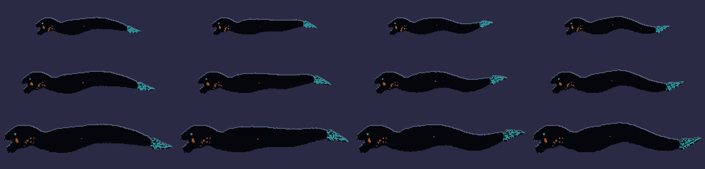
Chapada: só a sombra, o aro e as luzes (A).
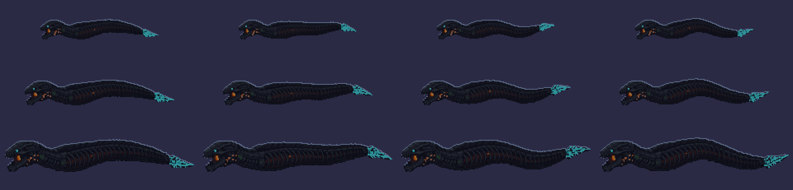
Afundada: o corpo dela escurecido para o tom da nuvem, com os anéis à mostra (B e C).
O golfinho (o nado aprovado, 9 quadros)
De 10 a 30 px, distante, com o aro na luz da água.
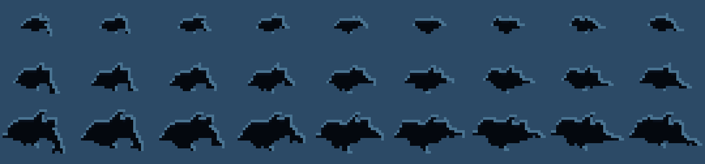
F3 — a enguia no Ato 1
Ela cruza da esquerda para a direita, nadando à frente, para onde a nave vai: é lá que ela espera (a Serpente, aos 97 s). Passa aos 19 s e sai aos 23 s: depois da 1ª aparição da lula, com os kamikazes dos 20 s passando por baixo dela. No 1º filme ela passava aos 22 s, e os batedores dos 24 s entravam pela direita na mesma altura, escuros sobre o corpo escuro dela; por isso adiantei. Fica na frente da nuvem do meio e das rochas escuras distantes, e atrás de todo inimigo e dos véus. Na 1ª foto, atrás da nuvem, ela quase sumia.
A — a sombra
Chapada: só a sombra, o aro frio e as luzes dela. 190 px, 4,2 s de borda a borda.
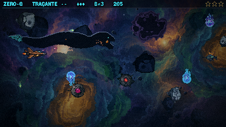
20,5 s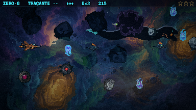
21,5 sB — afundada na nuvem
O mesmo caminho, mas com o corpo dela à mostra (os anéis), escurecido para o tom da nebulosa.
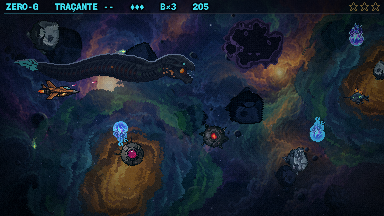
20,5 s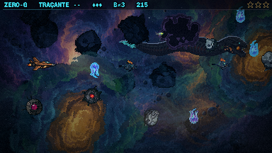
21,5 sC — mais perto
A maior (240 px), afundada, e mais rápida (3,6 s).
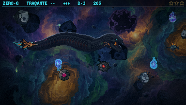
20,5 s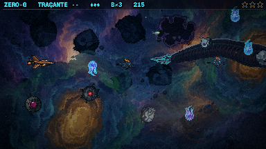
21,5 sOs vídeos estão no dobro da tela, em velocidade real, de 18,6 a 23,8 s. A nave fica parada e intocável, e os inimigos do roteiro continuam na tela.
F4 — o golfinho na câmara B
A câmara só tem água enquanto ele vive: ela drena quando ele morre. Por isso os outros da espécie passam durante o duelo, ao longe, no fundo do túnel de costelas da pintura (o trecho claro dela). A conta é o relógio do duelo: a 1ª passagem sai 7 s depois de ele nascer (depois do aviso e do X), a 2ª aos 22 s, no sentido contrário, se o duelo ainda durar. Se ele morre no meio de uma passagem, ela some com a água drenando. Fica atrás de toda peça do interior (as costelas, os órgãos, o maquinário), e as colunas às vezes a escondem. O caminho passa só pelo trecho claro do túnel medido no jogo (x 100–255, y 70–120): no 1º filme ele cruzava a faixa de veias escuras à direita, e ali o corpo sumia e sobrava só o aro.
A — um ao longe
Um golfinho de 20 px atravessa o fundo do túnel em 8 s. Aos 22 s do duelo, outro volta no sentido contrário.
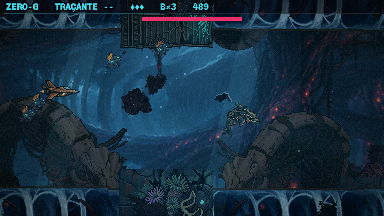
49 sB — o par
Dois juntos, um menor e um pouco atrás, nas mesmas duas passagens.
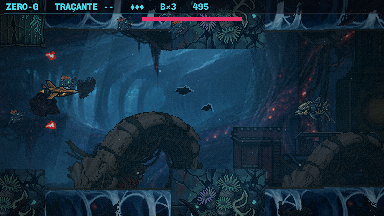
51 sC — para o fundo
Ele nada para dentro do túnel, encolhendo de 28 para 10 px, e some na água ao longe.
Os vídeos vão de 46,6 a 55,6 s da fase, ou seja, de 6,6 a 15,6 s do duelo (o golfinho nasce aos 40 s): é a 1ª passagem. A 2ª, aos 22 s do duelo, só acontece se o duelo durar.
Para você decidir
- A enguia: A (a sombra), B (afundada) ou C (a maior, mais baixa e mais rápida)? E o tamanho, a velocidade, a altura e o momento (19 s) servem?
- O golfinho: A (um, e outro na volta), B (o par) ou C (nadando para o fundo do túnel)? E o tamanho (20 px)? Uma vez a silhueta passa atrás do golfinho de verdade; se isso confundir, ela pode esperar a hora em que ele está fora da tela.